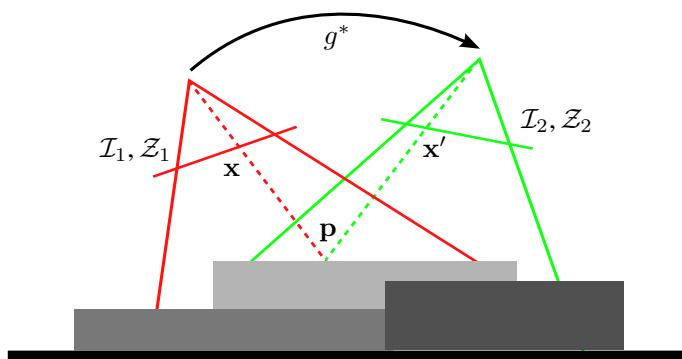
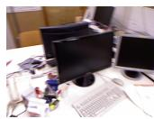
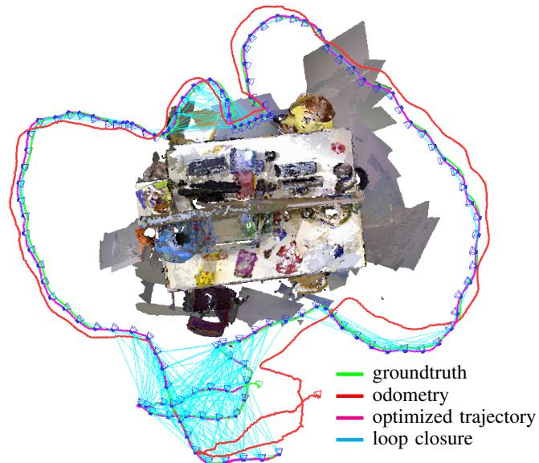

阶段 C · 视觉主干 / Lesson 0051
DVO-SLAM（2013）：用现成深度做直接法
RGB-D 相机直接把深度图喂给你，直接法从此不必再「估逆深度」——这一节讲清它长什么样，以及「深度残差」为什么非加不可 📷
🎯 主题：稠密直接法、光度+深度双残差、t 分布鲁棒核、熵比
👥 作者：Kerl, Sturm, Cremers（慕尼黑工业大学）
📅 2013 · Dense Visual SLAM for RGB-D Cameras （IEEE/RSJ IROS）
本节目标 读完你应该能：说清 RGB-D 相机让直接法「省掉」了什么；默写光度残差与深度残差两个公式并解释深度残差为何等价于 point-to-plane ICP；明确说出鲁棒核用的是 t 分布而不是 Huber；讲透熵比 α 同时管「选关键帧」和「判回环」两件事；复述三层结构与实验数字。
和前面课程怎么接 上一节 0050 SVO 讲「半直接」：只在运动估计那一步用直接法、特征对应是副产品。0046 DTAM 则是「单目稠密直接法」——它必须同时估计逆深度 ，因为单目相机本身没有深度。本节 DVO-SLAM 正好接在 DTAM 后面：换上 RGB-D 相机后，深度图是现成给的 ，于是整个变形函数不用再把深度当未知量去估。这是「悬念④：提取 vs 不提取特征」这条主线里，把直接法推向「有深度就别费劲估深度」的关键一步。
1. 从 DTAM 到 DVO：相机给你深度，你就别再估了
先复习一句话：直接法 （direct method）不靠「先提特征、再匹配特征」，而是直接拿两帧之间的像素灰度差 （光度误差）去优化相机运动。我们在 0046 DTAM 里看过单目版本：单目相机不知道每个像素离相机多远，所以 DTAM 必须把「逆深度」也当成要优化的未知量一起估。
但 RGB-D 相机（Kinect 一类）不一样：它除了彩色图，还直接输出一张深度图 $\mathcal Z(\mathbf x)$，每个像素对应一个真实距离。于是 DVO-SLAM 的变形函数（warping function）可以写成：
请盯住里面那个 $\mathcal Z_1(\mathbf x)$：它直接用了第一帧已有的深度图 ，把像素 $\mathbf x$ 反投影成 3D 点，再用位姿 $\mathbf T$ 投到第二帧。换句话说——深度是被「读」出来的，不是被「估」出来的 。原文从头到尾没有出现「inverse depth（逆深度）」这几个字，只在说深度残差「equivalent to point-to-plane ICP with projective lookup（等价于带投影查询的 point-to-plane ICP）」。
这正是 DVO 相对 DTAM 省掉的最大一块：单目要解的逆深度未知数，在这里直接拿传感器的深度图顶替了。代价是你要相信这张深度图的质量——这点我们在第七节会看到它带来的局限。

原图注（Fig. 2）： We propose a dense SLAM method for RGB-D cameras that uses keyframes and an entropy-based loop closure detection to eliminate drift. The figure shows the groundtruth, frame-to-keyframe odometry, and the optimized trajectory for the fr3/office dataset.怎么看这张图： 这张总览图把 DVO 的野心画得很清楚——它要同时用稠密 （dense，逐像素）的信息、又用关键帧 + 基于熵的回环检测 来消漂移。最上面那条绿/灰轨迹是「帧对关键帧」的里程计结果，下面那条是经全局优化、消掉漂移后的轨迹。注意它从一开始就不只是「算两帧相对运动」，而是要拼出一张一致的地图。
互动判断
相对 DTAM，DVO-SLAM 在变形函数里用 RGB-D 的深度图顶替了什么？
单目必须估计的逆深度
相机的六自由度位姿
2. ★ 两个残差 + 一个先验（先纠正一个常见说法）
很多人把 DVO 说成「有三个误差项」。原文其实不是这么分的。它要最小化的，是两个残差的和 ，再加一个运动先验 。我们一本正经地把这个说法纠正过来：
2.1 光度残差（灰度差）
把第一帧的灰度记作 $\mathcal I_1(\mathbf x)$，第二帧在 warp 后的位置灰度记作 $\mathcal I_2(\tau(\mathbf x,\mathbf T))$，光度残差就是两者之差：
它的物理含义是「同一个 3D 点的亮度，在两帧里应该一样 」（photo-consistency）。只要场景静止、光照不变、传感器干净，这条假设就成立。这个词我们在 SVO、DSO 里反复见过——它是所有直接法的根。
2.2 深度残差（预测深度 vs 观测深度）
同样的思想套到深度上：用位姿把第一帧的 3D 点投到第二帧后，它在第二帧深度图里的预测深度 ，应该和第二帧实际观测到的深度 一致：
方括号里的下标 $[\cdot]_Z$ 表示「取这个 3D 点的 Z 分量（深度）」。
为什么非要它不可？ 因为深度图和灰度图一样有噪声、有外点（比如结构光打到反光面会失效）。更关键的是：当场景纹理很弱 （一面白墙、一块纯色桌面）时，光度残差几乎给不出约束——灰度到处差不多，你把图往哪边挪，灰度差都变化不大，所以「拉不动位姿」。而深度残差不依赖纹理：它比的是空间里表面有没有被摆对位置 。原文甚至点明，它等价于带投影查询（projective lookup）的 point-to-plane ICP ——也就是把观测深度和预测深度拉到「同一个像素」上比较，再求点到面的距离。
2.3 运动先验（匀速模型）
最后还有一项：$-\log p(\xi)$，即把相机运动约束在一个匀速运动模型 （constant velocity）附近。它像一个「上一帧的运动最可能在下一帧继续」的软约束，给优化一个合理的初值、抑制单帧的离谱跳变。
图 A · 两个残差各自把位姿往哪拉（本章最重要的一张）
RGB-D 相机
地面
倾斜的桌面
杯子
光度残差
沿图像平面：把「图案/纹理」对齐
深度残差
沿空间：把「表面位置」对齐
天平比喻
只有光度残差
→ 白墙拉不动
加上深度残差
→ 仍给约束
这张图在画什么： 左侧一台 RGB-D 相机在观察一张倾斜的桌子和上面的杯子。绿色箭头代表光度残差 ，它沿着「图像平面」方向工作，目标是把两帧之间的纹理/图案 对齐；蓝色箭头代表深度残差 ，它沿着桌面的法线方向（空间里） 工作，目标是把表面位置 摆对。右上角的「天平」说明两者是互补的两股拉力。怎么看这张图： ① 光度残差只关心「看起来像不像」，所以遇到一面白墙 （纹理弱）时几乎使不上劲；② 深度残差关心「位置对不对」，哪怕白墙也能给出约束 ；③ 两者合在一起，就是 DVO 比纯光度直接法更稳的原因。要记住的一句话： 深度残差不靠纹理，它把「表面有没有摆对」当成额外约束——这是 RGB-D 直接法能打的关键。
图 B · 为什么深度残差等价于 point-to-plane ICP
斜放的桌面（真实表面）
预测点
观测点
点到面的距离
把观测点拉向预测点
投影查询：把观测深度与预测深度「拉到同一个像素」上比较，再求垂直距离
这张图在画什么： 一条斜放的桌面就是「真实表面」。蓝色点是根据位姿从第一帧预测 到第二帧表面上的点，红色点是第二帧深度图里实际观测 到的点。绿色虚线是红色点到桌面的垂直距离——这就是深度残差想压小的量。怎么看这张图： ① 注意两个点是落在「同一个像素位置」被比较的（projective lookup），不是任意两点求距离；② 它比较的是「沿法线方向」的偏差，这正是 point-to-plane ICP 的核心，所以原文说深度残差等价于它。要记住的一句话： 深度残差 = 把预测深度与观测深度投影到同一像素后，求点到面的垂直偏差。
互动判断
在纹理很弱的一面白墙上，下面哪句话对？
只用光度残差也能很好约束位姿
深度残差不靠纹理，白墙也能给约束
3. ★ 鲁棒核是 t 分布，不是 Huber！
这里要纠正一个二手资料常犯的错误：很多人讲到 DVO 的鲁棒性时顺手写成「用 Huber 核」——原文根本不是。 我们课上已经纠过好几次这类「替论文补一个听起来合理的东西」的坑。
原文把光度误差和深度误差合起来，看成一个二元随机变量 $\mathbf r=(r_{\mathcal I}, r_{\mathcal Z})^\top$，并用一个二元 t 分布 （bivariate t-distribution）$\mathrm p_t(\mathbf 0,\boldsymbol\Sigma,\nu)$ 来建模。优化目标变成加权最小二乘：
其中权重来自 t 分布，是一个自适应权重 ：
为什么用 t 分布而不是高斯？原文的解释很漂亮：t 分布可以看作「无穷多个不同方差的高斯的混合」。于是误差大的点（很可能是外点）落在「大方差分量」里，被自动给低权重 ；误差小的点落在「小方差分量」里，被给高权重 。而且这个加权是随数据自适应更新的（用 EM 算法迭代估计 $\boldsymbol\Sigma$ 和 $w_i$）。
请把它和 0018/0019 BA 里讲的鲁棒核区分开：Huber、Cauchy 那一套是「手工设计的递减权重函数」，而 DVO 这里是从概率模型里自然导出 的自适应权重。一句话——原文用的是 t 分布，不是 Huber 。下次看到有人写 DVO 用 Huber，你可以拍着他肩膀说：回去重读第 129 页。
互动判断
DVO-SLAM 抑制粗差（外点）的鲁棒核用的是哪种？
Huber 核
二变量 t 分布导出的自适应权重
4. ★ 熵比 α：一个指标，两个用途
DVO 里我最喜欢的一个设计，是同一个量同时管两件事 ：选关键帧、判回环。这个量叫熵比（entropy ratio） $\alpha$。
先说背景：估计出来的位姿 $\xi$ 被当成高斯分布，它的不确定度由协方差 $\Sigma_\xi$ 描述。一个高斯分布的（微分）熵正比于协方差行列式的对数，$H(\xi)\propto \ln|\Sigma_\xi|$——熵越大，说明这次估计越不确定。DVO 把「当前帧相对关键帧的位姿不确定度」，跟「最可信的那一帧（关键帧到紧邻下一帧）的不确定度」做比值：
这个 $\alpha$ 同时干两件大事：
用途一 · 选关键帧 当 $\alpha$ 落到预设阈值以下 时，就把上一帧选为新的关键帧插进地图。换言之：当前帧相对关键帧的估计已经「太容易/太确定」（或漂移模式变了），该换关键帧了。
用途二 · 判回环 同一套熵比检验也用于回环：当相机回到曾经到过的地方 ，$\alpha$ 会出现明显的峰值 ，且高熵比正好对应「低误差」——这个峰值就是回环候选信号。
一个指标、两处复用，既减少了需要手调的参数，又让「关键帧选择」和「回环检测」用的是同一把尺子。这是很聪明的工程省心设计。
图 C · 熵比 α 一个指标两个用途（示意趋势，非精确数值）
α
帧序号（时间）
阈值
起始高值
α 低于阈值 → 选上一帧为新关键帧
第二峰值 = 回到旧地点 → 回环候选
漂移中
这张图在画什么： 横轴是帧序号（时间），纵轴是熵比 α。曲线左端起始有个高值（相对参考帧），随后掉到阈值线以下（这一段意味着应该换关键帧），中间在漂移中保持中等，最后在「回到曾经到过的地方」时又冲出一个明显的第二峰值。怎么看这张图： ① 红色虚线是阈值，曲线掉到线下 的时刻触发「选新关键帧」；② 绿色圆点标记的第二峰值 是回环信号；③ 同一根曲线，两端各管一件事——这就是「一个指标两个用途」。要记住的一句话： α 既是关键帧的开关，也是回环的警报；高熵比 = 低误差 = 可能回环。

原图注（Fig. 3(b)）： Frame 50 of the freiburg1/desk dataset matched against all frames of the dataset. Plot (b) displays the entropy ratio α. Note how high entropy ratio values coincide with low error in the estimate. The second peak in the entropy ratio indicates a loop closure detection.怎么看这张图： 这是论文里真实的 α 曲线：把第 50 帧和整段序列逐帧比较。可以看到 (b) 里最右那一段（回到第 50 帧附近，约 420–450 帧）出现第二峰值 ，原文明确说那就是一次回环检测。对照 (a) 还能看到：高 α 的地方恰好误差低 ，印证了 α 作为「置信度标尺」的可靠性。
5. 三层结构 + 实验数字
DVO-SLAM 不是只算两帧相对运动，它有三层，层层递进：
第一层：视觉里程计。 用上面两个残差，做「当前帧 ↔ 最近关键帧」的直接对齐。只要相机离关键帧够近，就几乎不漂移。第二层：位姿图优化（回环）。 每个关键帧是一个图节点，边是相对位姿约束；当检测到回环，就加一条新边，用 g2o （见 0021 g2o ）做全局非线性最小二乘，把累积误差分摊掉。第三层：地图融合。 用优化后的位姿把所有深度图投回同一坐标系，拼出一致的点云地图。
5.1 实验数字（请记下来）
论文在 TUM RGB-D 基准上测试，而且特别强调：纯 CPU （Intel Core i7-2600 / 16 GB，不用 GPU ）。几个关键数字：
跟踪耗时 帧对关键帧对齐约 32 ms （≈ 31 Hz）
地图更新耗时 回环检测 + 图优化平均约 135 ms
平均 ATE 0.034 m ，对比 KinectFusion 的 0.297 m
注意那个对比数字：KinectFusion（0033 ）是没有回环、纯帧对模型的稠密方法，在长轨迹上漂得很厉害，ATE 高达 0.297 m；而 DVO 靠关键帧 + 回环把它压到 0.034 m，差了将近一个数量级。论文还报告：加关键帧平均减少 16% 漂移，再加位姿图优化累计减少约 20%，全局轨迹误差相比纯帧对帧降低约 170%。

原图注（Fig. 1）： We propose a dense SLAM method for RGB-D cameras that uses keyframes and an entropy-based loop closure detection to eliminate drift. The figure shows the groundtruth, frame-to-keyframe odometry, and the optimized trajectory for the fr3/office dataset.怎么看这张图： 这是 fr3/office 序列的结果。黑色是真实轨迹，红色是「帧对关键帧里程计」（已经有漂移但被关键帧压住），青色（cyan）连线是回环 ，蓝色相机锥是关键帧位姿，绿色线是被全局优化后、消掉漂移的轨迹。它直观展示了三层结构最后那一步「地图融合」的威力——一条干净贴合地面的轨迹。
6. 局限 + 巩固练习
DVO 很强，但它对传感器和场景有明确要求，原文和后续实践都点出了这些硬伤：
依赖深度质量 结构光在阳光下会失效 ，深度有系统性偏差；深度本身就是噪声 + 外点的来源（所以才需要深度残差去「拉住」光度残差）。
对光照敏感 光度残差建立在「亮度恒定」假设上，自动曝光突变、强反光都会破坏它。
时间同步要求 RGB 与深度必须严格对齐到同一时刻，否则 warp 时像素对不上。
静态场景假设 和所有直接法一样，默认场景不动；动态物体会污染残差。
这些局限也解释了为什么下一节 0052 RGBD-SLAM-v2 会走一条完全不同的路：稀疏特征 + 八叉树占据地图 ，而不是像素级直接法。
课后练习
写出 DVO 的变形函数 $\tau(\mathbf x,\mathbf T)$，并说明其中哪一部分让 DVO 不必像 DTAM 那样估计逆深度。
展开查看答案 $\mathbf x'=\tau(\mathbf x,\mathbf T)=\pi(\mathbf T\,\pi^{-1}(\mathbf x,\mathcal Z_1(\mathbf x)))$。关键在 $\mathcal Z_1(\mathbf x)$——它直接读第一帧已有的深度图，把像素反投影成 3D 点，深度是「已知量」而不是「待估未知量」，所以省掉了 DTAM 必须估的逆深度。
光度残差和深度残差分别靠什么提供约束？为什么白墙场景特别需要深度残差？
展开查看答案 光度残差靠「灰度一致」约束位姿（沿图像平面对齐纹理）；深度残差靠「预测深度与观测深度一致」约束位姿（沿空间摆正表面）。白墙纹理极弱，灰度处处相近，光度残差几乎给不出梯度，位姿拉不动；深度残差不依赖纹理，所以仍能约束。
原文抑制外点用的是 Huber 吗？它的鲁棒权重公式是什么？
展开查看答案 不是 Huber，是二变量 t 分布导出的自适应权重：$w_i=(\nu+1)/(\nu+\mathbf r_i^\top\boldsymbol\Sigma^{-1}\mathbf r_i)$。误差越大权重越小，且权重随数据自适应更新。
熵比 α 同时服务哪两个目的？分别看 α 的什么特征？
展开查看答案 ① 选关键帧：当 α 低于阈值，把上一帧选为新关键帧；② 判回环：当 α 出现明显峰值（高熵比对应低误差），判定可能是回环。一个指标两处复用。
DVO 三层结构分别是什么？为什么它能把 ATE 从 KinectFusion 的 0.297 m 压到 0.034 m？
展开查看答案 三层：帧—关键帧直接对齐（里程计）→ 关键帧间位姿图优化（回环，用 g2o）→ 地图融合。KinectFusion 没有回环、纯帧对模型，长轨迹漂移到 0.297 m；DVO 靠关键帧抑制局部漂移 + 回环消全局漂移，把 ATE 压到 0.034 m。